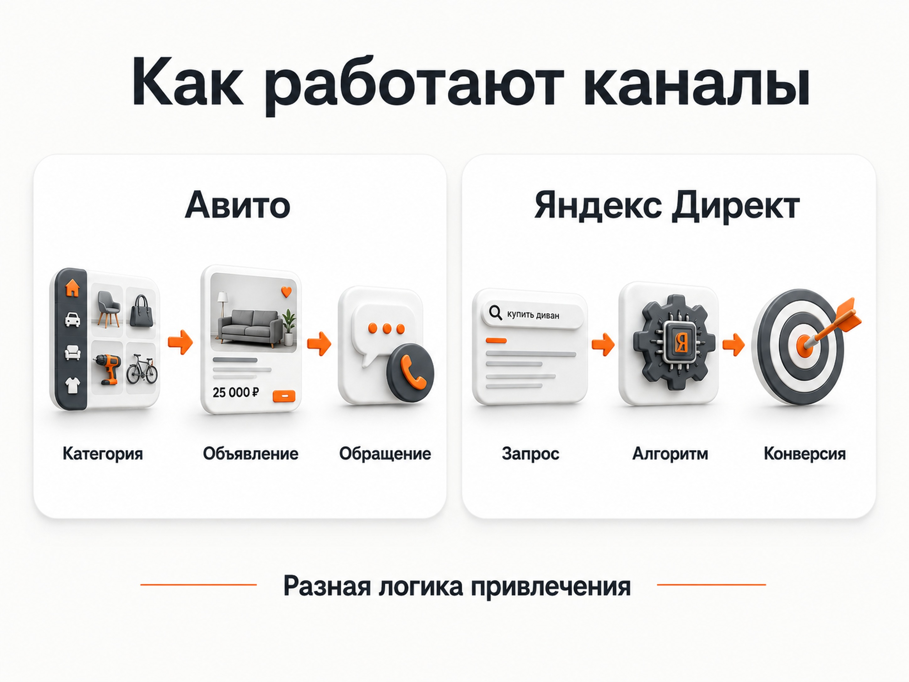
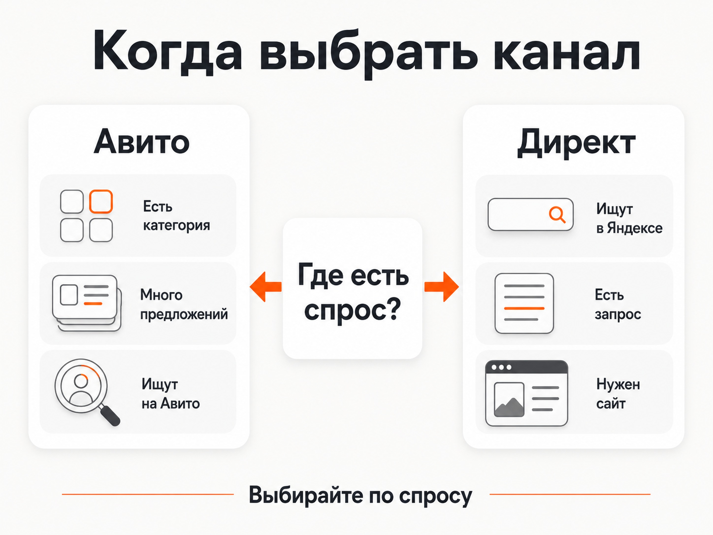
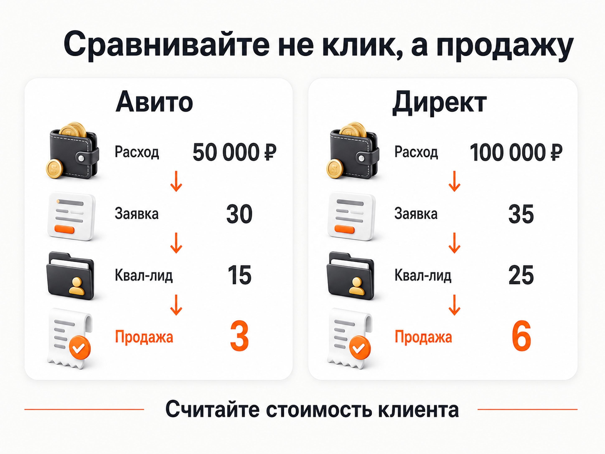

Блог о платном трафике
Авито или Яндекс Директ: что выбрать для рекламы бизнеса
Если выбирать между Авито и Яндекс Директом, я бы сначала ответил на один вопрос: ищут ли ваш товар или услугу на Авито.
Если там существует активная категория, много похожих предложений и пользователи действительно выбирают исполнителей или товары через объявления, Авито имеет смысл протестировать. Особенно если в Яндекс Директе ниша перегрета и стоимость привлечения получается высокой.
Если ваш продукт на Авито практически не ищут, а клиенты обычно идут в Яндекс, я бы начинал с Директа. Размещаться на площадке только потому, что там большая аудитория, смысла немного.
При этом Авито и Директ не обязательно выбирать навсегда. В некоторых нишах нормально работают оба источника, а решение принимается уже по стоимости целевого лида и продажи.
Сначала определимся, что именно считать рекламой на Авито
Здесь есть два разных сценария, которые часто смешивают.
Первый - обычные объявления на Авито и их платное продвижение. Вы создаете карточку товара или услуги, а пользователь находит ее внутри каталога.
Второй - Авито Реклама. Это отдельный рекламный инструмент, через который можно показывать рекламу аудитории площадки и вести человека в том числе на внешний сайт.
Это принципиально разные механики.
Когда речь идет о размещении обычного объявления, наличие спроса внутри конкретной категории особенно важно. Если люди не открывают Авито для поиска вашей услуги, продвигать такое объявление обычно бессмысленно.
У Авито Рекламы возможностей больше. В мае 2026 года платформа запустила автотаргетинг, при котором алгоритмы анализируют рекламный текст, креатив и поведение пользователей. В августе появился таргетинг по ключевым словам, позволяющий формировать аудиторию на основании поисковых запросов внутри Авито.
Поэтому утверждать, что Авито в принципе не использует алгоритмы, уже неправильно. Но по глубине автоматической оптимизации это пока другой инструмент, чем Яндекс Директ.

Главное отличие Авито от Яндекс Директа
Яндекс Директ изначально построен как рекламная система, которая работает с большим количеством сигналов и может оптимизироваться под конкретный результат.
Например, автоматическая стратегия может стремиться получить максимум конверсий в рамках бюджета или заданной средней цены действия. Алгоритмы постоянно корректируют ставки с учетом вероятности конверсии конкретного пользователя.
Чтобы это нормально работало, системе нужны данные.
Поэтому у Директа есть одновременно сильная и слабая сторона: рекламную кампанию можно постепенно обучать, но сначала нужно дать алгоритму достаточно качественных конверсий.
Подробнее - в статье «Как настроить рекламу в Яндекс Директ в 2026 году».
У Авито логика другая. Особенно если мы говорим именно об объявлениях внутри площадки.
Здесь огромное значение имеют:
- наличие спроса в категории;
- позиция объявления;
- фотографии;
- цена;
- предложение;
- количество конкурентов;
- отзывы и доверие к профилю;
- платное продвижение.
Если категория сама по себе слабая, никакая настройка не создаст внутри нее большой поток покупателей.
Когда я бы выбрал Авито
Первое условие - люди уже ищут там ваш товар или услугу.
Открываем Авито, вводим основные запросы и смотрим выдачу. Если там десятки или сотни конкурирующих предложений, активные продавцы, отзывы и хорошо развитая категория, это хороший признак.
Конкуренция здесь скорее плюс, чем минус. Она подтверждает, что площадка уже используется для выбора такого продукта.
Типичные примеры:
- ремонтные и строительные услуги;
- мебель и кухни на заказ;
- автомобили и связанные услуги;
- оборудование;
- бытовые услуги;
- некоторые производственные услуги;
- товары, которые естественно сравнивают между продавцами.
В таких нишах Авито может оказаться интересным даже при наличии рабочего Директа.
Особенно я бы посмотрел в его сторону, если поисковая реклама стала слишком дорогой.
Например, в очень конкурентной нише кухонь на заказ можно сколько угодно улучшать объявления, сайт и посадочную страницу, но полностью убрать влияние дорогого аукциона невозможно. В какой-то момент стоимость заявки ограничивается уже не качеством настройки, а самой конкуренцией за пользователя.
Если одновременно существует развитый спрос на Авито, логично проверить второй канал.
Когда я бы выбрал Яндекс Директ
Директ я бы ставил первым, когда человек явно формулирует свою проблему или потребность в поиске Яндекса.
Например:
- «налоговый консультант для бизнеса»;
- «юридическое сопровождение сделки»;
- «производство деталей по чертежам»;
- «лечение прикуса»;
- «внедрение CRM».
В таких ситуациях пользователь сам рассказывает поисковой системе, что ему нужно.
Поиск позволяет показать предложение непосредственно в этот момент.
Кроме того, Директ не ограничен только поисковой выдачей. Можно работать через РСЯ, ретаргетинг, различные аудитории и автоматические кампании.
На моих B2B-проектах встречались разные сценарии: где-то основной поток давал Поиск, а где-то РСЯ и автоматические кампании. Поэтому внутри самого Яндекс Директа тоже нет универсального формата, который всегда работает лучше остальных.
Подробнее - в статье «Поиск или РСЯ в Яндекс Директе».
Подробнее - в статье «Яндекс Директ для B2B».
Если же речь идет, например, о специфическом бизнес-консалтинге, который практически никто не ищет на Авито, создавать там объявление только ради присутствия я бы не стал. Если сформированный спрос существует в Яндексе, намного логичнее начать с него.

Авито или Яндекс Директ: сравнение
| Критерий | Авито | Яндекс Директ |
|---|---|---|
| Где находится пользователь | Внутри площадки товаров и услуг | В поиске Яндекса, РСЯ и сервисах Яндекса |
| Главный вопрос перед запуском | Ищут ли это на Авито | Есть ли поисковый или подходящий аудиторный спрос |
| Работа со сформированным спросом | Сильная в развитых категориях | Особенно сильная на Поиске |
| Автоматизация | Есть автотаргетинг и аудиторные инструменты | Развитые автоматические стратегии и оптимизация по конверсиям |
| Посадочная страница | Часто само объявление или профиль | Обычно сайт или отдельный лендинг |
| Влияние конкуренции | Конкуренция внутри категории | Аукцион может сильно повышать стоимость трафика |
| Небольшой тест | Часто возможен | В дорогой нише маленького бюджета может не хватить для выводов |
| Масштабирование | Ограничено объемом аудитории Авито | Обычно возможностей для масштабирования больше |
Универсального победителя здесь нет.
В одной нише Авито может приводить заявки дешевле Директа. В другой там просто нет нужного покупателя.
Можно ли начать с Авито, если Директ слишком дорогой
Да. Это как раз один из наиболее разумных сценариев теста.
Допустим, вы видите, что:
- в Яндекс Директе очень дорогой аукцион;
- на Авито есть полноценная категория;
- конкуренты активно размещают объявления;
- предложение подходит под формат площадки.
Тогда можно не пытаться сразу вкладывать большой бюджет в Директ, а сначала проверить Авито.
Для обычного продвижения объявлений я бы в качестве практического теста рассматривал примерно 10 000-15 000 рублей.
Этого часто хватает, чтобы понять базовую вещь: появляется ли вообще нормальный отклик на ваше предложение.
Но это не универсальная минимальная сумма для любого бизнеса. Если используется отдельный кабинет Авито Рекламы, дорогая категория или требуется большой охват, тест может потребовать больше денег.
Сам Авито Реклама также работает с алгоритмическими механизмами, поэтому оценивать сложные кампании после нескольких сотен рублей расхода неправильно. При ведении трафика на внешний сайт я бы обязательно подключал Метрику и UTM-разметку.
Почему статистику Авито лучше дополнительно проверять в Метрике
Если реклама ведет на ваш сайт, я бы не ограничивался статистикой рекламного кабинета.
Обязательно нужны:
- UTM-метки;
- Яндекс Метрика;
- настроенные цели;
- желательно CRM, если заявок много.
Рекламный кабинет может показать клики и расходы. Но бизнесу нужен ответ на другой вопрос: сколько людей действительно пришло на сайт, оставило заявку и купило.
Внешняя аналитика особенно полезна, если данные кабинета и Метрики начинают расходиться.
Такое расхождение само по себе еще не означает, что одна из систем обязательно считает неправильно. Клик по рекламе и визит в Метрике - разные события. Человек может не дождаться загрузки сайта, браузер может блокировать часть аналитики, могут отличаться правила фильтрации и атрибуции.
При этом заметные расхождения между трафиком рекламного кабинета и данными Метрики встречаются, поэтому я бы всегда проверял результат независимо от рекламной площадки.
Подробнее - в статье «Как оценить эффективность Яндекс Директа».
Не сравнивайте Авито и Директ по цене клика
Допустим:
Авито дает переход по 30 рублей.
Яндекс Директ - по 250 рублей.
На первый взгляд кажется, что Авито почти в десять раз выгоднее.
Но если из 1 000 переходов с Авито вы получили пять нормальных заявок, а из 100 переходов из Директа - десять, цена клика ничего не решила.
Я бы сравнивал минимум:
расход -> целевые заявки -> квалифицированные лиды -> продажи.
Еще лучше считать стоимость реального клиента.
Подробнее - в статье «CPA в Яндекс Директе».
Подробнее - в статье «CPS в маркетинге».
Поэтому формулировка «Авито дешевле Яндекса» сама по себе бессмысленна. Дешевле должен быть не клик, а нужный бизнесу результат.

Нужно ли запускать Авито и Директ одновременно
Если бюджет позволяет и спрос присутствует на обеих площадках - да.
Не нужно заранее искать теоретический ответ, какой канал победит.
Запускаете две гипотезы, размечаете источники и считаете одинаковые показатели.
Например:
Авито:
50 000 ₽ -> 30 заявок -> 15 целевых -> 3 продажи.
Директ:
100 000 ₽ -> 35 заявок -> 25 целевых -> 6 продаж.
После этого уже можно считать стоимость квалифицированного лида и клиента, а затем перераспределять бюджет.
Обычная ошибка - сравнить 500 дешевых кликов с Авито со 100 дорогими кликами Директа и объявить первый канал победителем.
К бизнес-результату такое сравнение отношения почти не имеет.
Что в итоге выбрать: Авито или Яндекс Директ
Я использую достаточно простую логику.
Если ваш продукт активно ищут на Авито и там существует полноценная конкурентная категория - Авито стоит протестировать.
Если продукт на Авито практически отсутствует, но люди явно ищут его в Яндексе - начинать логичнее с Директа.
Если оба канала выглядят подходящими - лучше протестировать оба и сравнить стоимость целевой заявки и продажи.
Если Яндекс Директ стал слишком дорогим из-за высокой конкуренции, а на Авито есть активный спрос, небольшой тест Авито особенно оправдан.
Главное - не выбирать площадку по стоимости клика и не считать количество обращений единственным показателем. Канал должен приводить клиентов по цене, которая укладывается в экономику бизнеса.